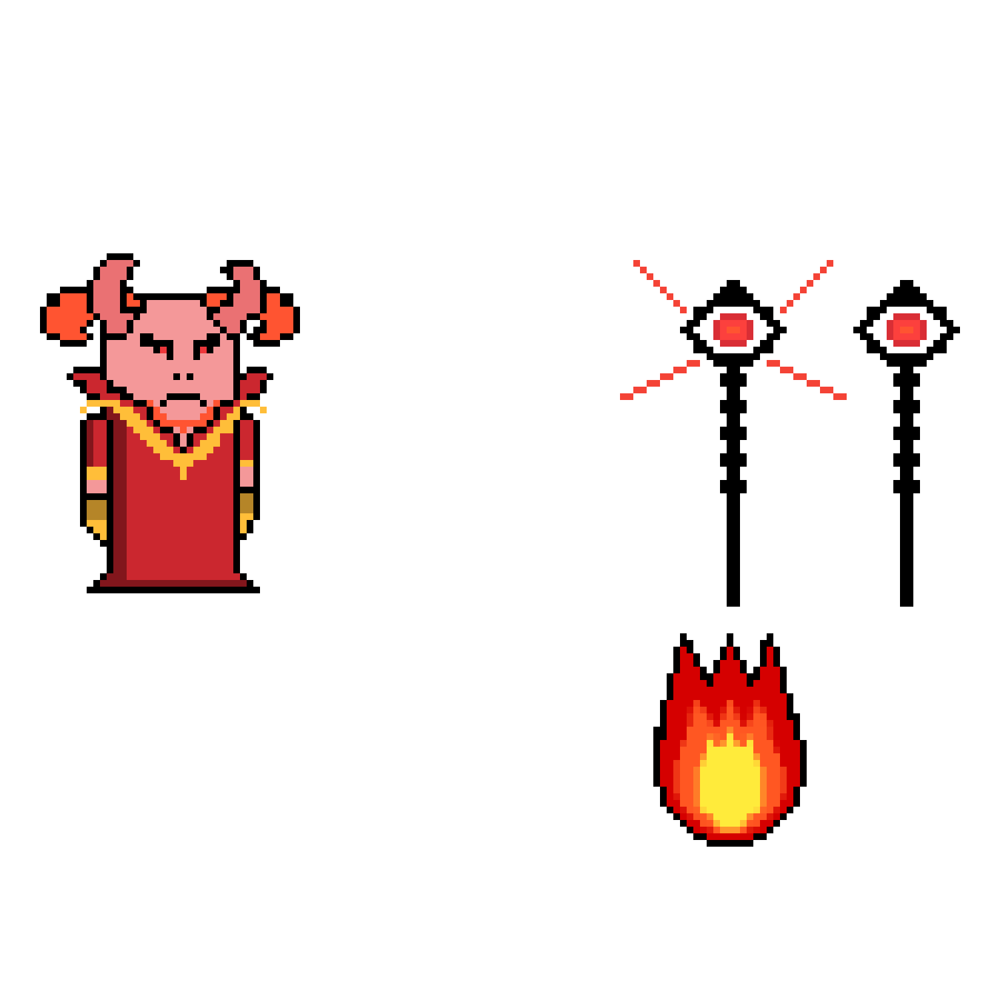
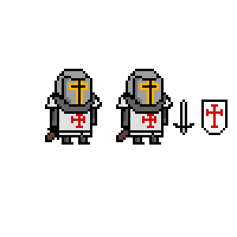
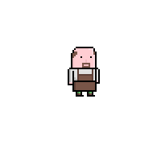
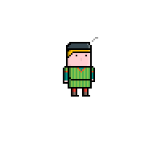
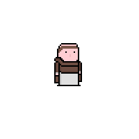
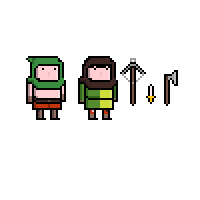
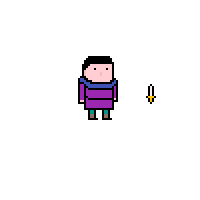
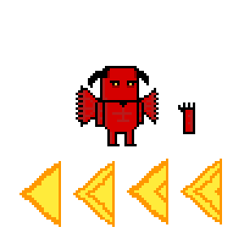
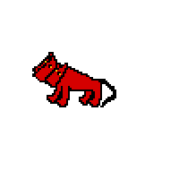

Projet Demons et Chevaliers - 2022
Game Design & Prop Art & Level Design
RPG en pixel art en 2D réalisé en 8 sessions de 2 heures dans le cadre d'un projet en cours de NSI en terminale à l'aide de l'outil Pixilart et de la bibiliothèque Python Pygame.
Présentation du projet
Il s'agit d'un RPG en 2D avec une vue top-down. Le joueur incarne un templier au début du XXIIème siècle dont l'objectif est d'anéantir les démons qui se trouvent dans une grotte non loin de la ville de Carcassone.
Le personnage peut attaquer avec son épée et gagner de l'expérience en tuant des monstres ce qui lui permet de gagner des niveaux augmentant ainsi légèremment ses points de vie.
Le personnage peut aussi obtenir des coeurs en vainquant des monstres ce qui lui permet de regagner de la vie.
Il s'agissait de notre premier projet de jeu et nous avons appris à nous servir de Pygame et de Pixilart pendant le développement du jeu.
Contribution
Pour ce projet j'ai réalisé tous les personnages, une grande partie des cartes notamment celle de la ville et de la grotte et la majorité des props et éléments de décors.
J'ai aussi écrit plusieurs dialogues et imaginé l'histoire du jeu et les règles du jeu.
Voici plusieurs exemples de mes créations dont certains qui n'ont pas pu être ajoutés au jeu.
Ce projet représente pour moi la première fois que j'ai conceptualisé un jeu puis mis en place les différents éléments afin de le créer.
Malgré le court temps que j'y ai passé j'ai beaucoup apprécié concevoir et développer ce jeu avec mes amis.

Asmodée, le boss final
Le Templier, le personnage principal
Un forgeron
Un marchand
Un prêtre
Plusieurs bandits
Un voleur
Un démon puissant
Un cerbère